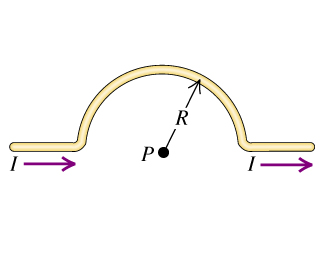

2805 Magnetic Field of a Circular Current Loop
Exercises
28.34 Calculate the magnitude of the magnetic field at point P due to the current in the semicircular section of wire shown in the figure (Figure 1). (Hint: Does the current in the long, straight section of the wire produce any field at P?)

Solution